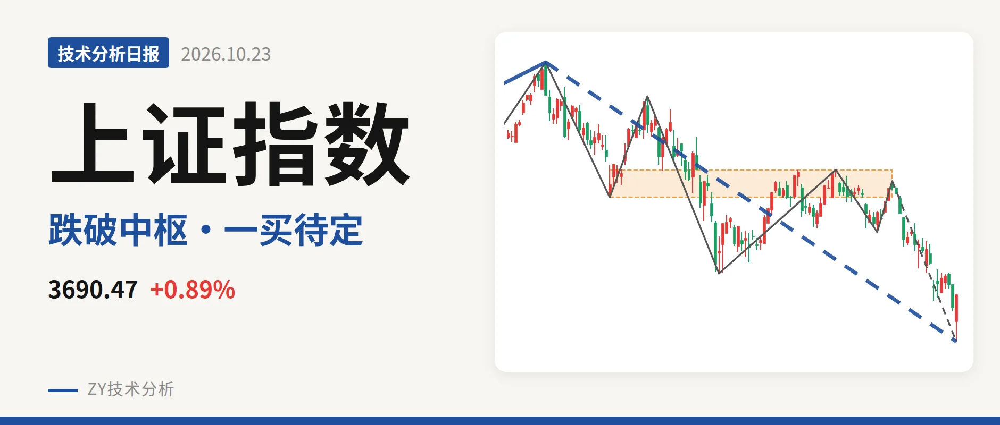
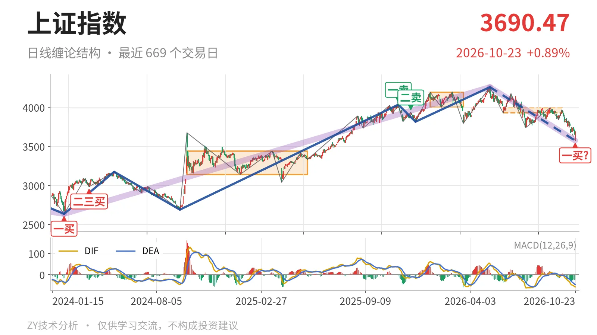
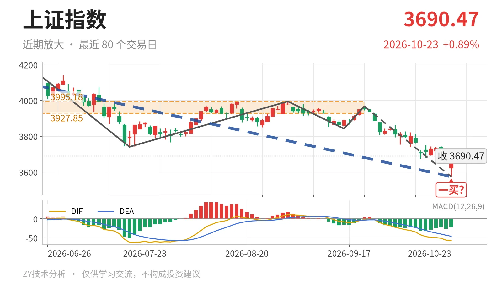

上证指数｜跌破日线中枢，3574点一买待定

最近日线中枢 3927.85—3995.18点，收盘位于中枢之下
一句话：日线下跌段未结束，暂定一买待变，反抽看3928点。
📉 走势结构：更大级别未坏，日线下跌还在延续
当前日线线段仍处5月14日以来的下跌段，还没有结束。该段由4258.86点跌至3574.27点，跌16.1%，内含7笔。更大级别看，2024年2月5日至2026年5月14日的上涨段累计上涨61.6%，并没有被破坏；5月14日后的回落段暂时只是该上涨段中的向下结构。但日线线段下跌未结束，就不能说日线已经止跌。

🧭 中枢与位置：跌破最近日线中枢，中枢下移
最新收盘3690.47点，低于6月8日至9月22日日线笔中枢下沿3927.85点约6%。该中枢区间3927.85—3995.18点，尚未完成，中轴3961.51点。此前1月14日至3月23日中枢为4002.78—4190.87点，中轴4096.82点。中枢中轴由4096.82点下移至3961.51点，价格已落在最近中枢下沿之外，属于中枢下移且跌破下沿的状态。
🧿 买卖点：3574点一买待定，前高卖点只限小级别
10月23日出现日线笔级别一买3574.27点，所在笔为9月22日至10月23日的下跌笔。这笔还在延续，所以这个一买只能暂定，会随笔的延续而变化。2025年11月14日一卖4034.08点与2025年12月8日二卖3936.31点一个比一个低，但之后5月14日仍创出4258.86点新高，这两个卖点只落在更小级别结构上。2024年2月5日一买2635.09点之后未创过新低，仍可保留日线底部结构。

🌀 背驰：价格新低但DIF未新低，面积仍在放大
关键一组对比在9月22日至10月23日下跌笔与6月23日至7月20日下跌笔之间。前者由3967.68点跌至3574.27点，绿柱面积347，DIF低点-57.1；后者由4175.35点跌至3741.11点，绿柱面积289，DIF低点-61.8。价格已经创低，DIF低点没有同步创低，出现“新低不新弱”的钝化；但绿柱面积由289扩大到347，向下动能没有明显收敛，不是标准底背驰。当前下跌笔还在延续，背驰结论要等这笔结束后才能定型。
📏 关键位置观察：反抽看3928点，下方看3439点
结构上，最新价在6月8日至9月22日中枢下沿下方，反抽若回不到3928点上方，对该中枢构成三卖结构。下方结构位置看3439点附近，对应2024年10月8日至2025年5月27日中枢上沿3439.05点。若能重新站上3928点上方，当前下跌更可能只是中枢扩展而非一笔延续下行。整体是结构偏弱：弱在收盘已离开最近中枢下沿，且最后一笔绿柱面积仍未收缩。
⚠️ 本文为基于公开行情数据的缠论技术结构记录，由程序自动计算并生成，仅供学习交流，不构成任何投资建议。市场有风险，投资需谨慎。